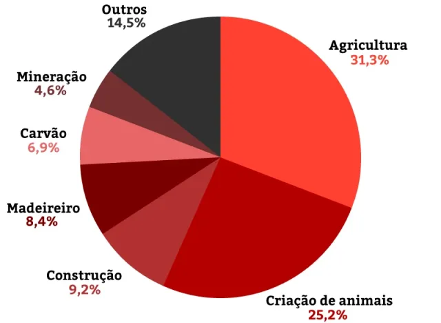

Contemporary slave labor involves degrading conditions that deprive the person of his dignity and freedom. It is characterized by the imposition of exhausting working hours, retention of documents, debt bondage and unhealthy working conditions. It is not limited to the use of physical force, but includes psychological coercion and restriction of basic rights. Although it is illegal in several countries, it occurs in sectors such as agriculture, civil construction and clothing. Exploitation often affects vulnerable populations, such as migrants and low-income people. Combating this practice requires strict enforcement, effective public policies, and social awareness. Slave labor violates fundamental principles of human rights.
Modern slavery affects millions of people around the world, manifesting itself in forms such as forced labor, sexual exploitation, human trafficking, and debt bondage. Even though it is prohibited by international law, this practice persists due to extreme poverty, social inequality and lack of enforcement. Victims are often lured with false promises of employment or better living conditions and end up being deprived of liberty and subjected to degrading conditions.
Contemporary slave labor is present in several areas of exploitation, especially affecting sectors with high demand for labor and little inspection. In agriculture, activities such as sugarcane, coffee, and cocoa cultivation often use workers in degrading conditions. In civil construction, workers are exploited in infrastructure and housing works. The textile industry is also one of the main areas, with clandestine workshops that produce clothes in conditions analogous to slavery. In addition, mining and fishing involve exhausting working hours and risky situations. Domestic services and forced sexual exploitation complete the picture, demonstrating that the problem affects different sectors and vulnerable populations.

Groups vulnerable to modern slavery include people in poverty, migrants, ethnic minorities, women and children. Lack of access to education, formal employment, and basic rights makes these individuals more susceptible to exploitation. Migrants, especially those in an irregular situation, are often lured with false promises of work and end up in degrading conditions. Ethnic minorities, such as indigenous peoples, face historical discrimination that exacerbates their vulnerability. Women, often subjected to domestic or sexual exploitation, face double jeopardy. Children are also exploited, especially in sectors such as agriculture and mining, depriving them of development opportunities. The protection of these groups requires integrated actions by government, society and international organizations.


.png)